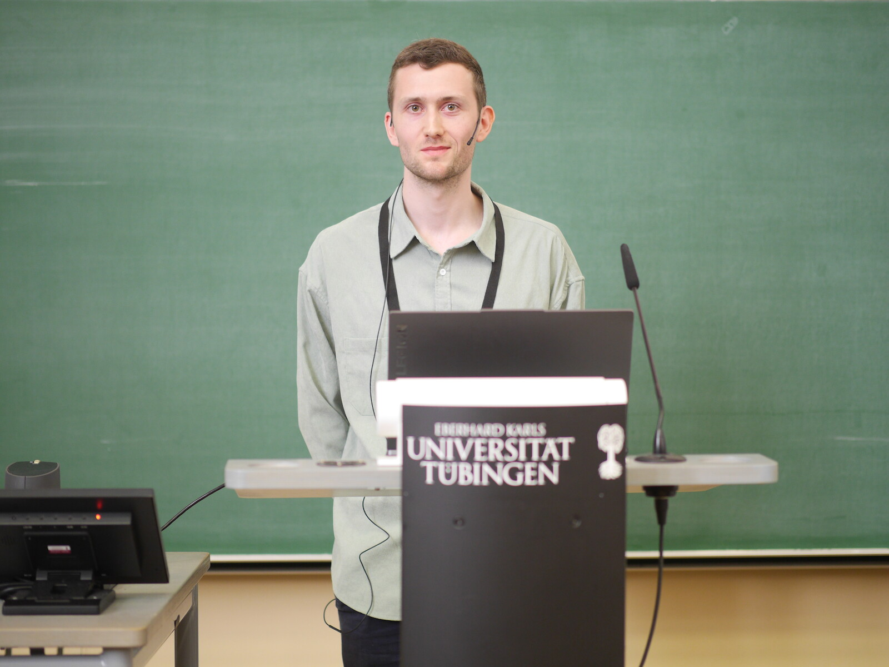

Publications / Talks / Other stuff
Hamish Flynn

I am a postdoc in the Department of Data Science and Statistics and the Department of Mathematical Sciences at Carnegie Mellon University. Previously, I was a postdoc in the Artificial Intelligence and Machine Learning Research Group at Universitat Pompeu Fabra in Barcelona. I did my PhD at the Bosch Center for Artificial Intelligence and the Intelligent Autonomous Systems Group at TU Darmstadt.
Contact
128-C Baker Hall
Pittsburgh, PA
News
Apr 2026 - I have moved to Carnegie Mellon University.
Mar 2026 - I wrote an elegant paper.
Jan 2026 - I will attend the CRM workshop on Mathematical Foundations of Machine Learning: PDEs, Probability, and Dynamics in Barcelona.
Dec 2025 - I will attend EurIPS in Copenhagen.
Sep 2025 - I will attend the European Workshop on Reinforcement Learning in Tübingen.
Jun/Jul 2025 - I will attend the workshop on Game-Theoretic Statistical Inference: Optional Sampling, Universal Inference, and Multiple Testing based on E-Values in Chennai.